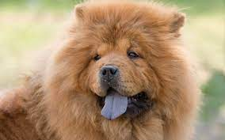

Overview
The Chow Chow, an all-purpose dog of ancient China, presents the picture of a muscular, deep-chested aristocrat with an air of inscrutable timelessness. Dignified, serious-minded, and aloof, the Chow Chow is a breed of unique delights. Chows are powerful, compactly built dogs standing as high as 20 inches at the shoulder. Their distinctive traits include a lion's-mane ruff around the head and shoulders; a blue-black tongue; deep-set almond eyes that add to a scowling, snobbish expression; and a stiff-legged gait. Chows can have rough or smooth coats of red, black, blue, cinnamon, or cream. Owners say Chows are the cleanest of dogs: They housebreak easily, have little doggy odor, and are known to be as fastidious as cats. Well-socialized Chows are never fierce or intractable, but always refined and dignified. They are aloof with strangers and eternally loyal to loved ones. Serene and adaptable, with no special exercise needs, Chows happily take to city life.
Characteristics
- Friendly and tolerant nature
- breed comes in two coat types: smooth and rough
- extremely independent, even stubborn, making it difficult to train.
- Chow Chows tend to be aloof toward strangers and may not be pleasant toward strange dogs and people.
Care
Both the rough- and smooth-coated Chows have a profuse double coat and require regular grooming. Thorough brushing at least twice per week and a monthly bath can keep the dog's skin and coat healthy. Be sure to immediately remedy any parasite issues, such as fleas or ticks. Include eye and ear care with each grooming, and trim nails regularly. Puppy coat and the coat around the head can become badly matted if not groomed regularly. Care must be taken to remove all mats and brush or comb through the undercoat. It is preferable to use a cool air dryer to thoroughly dry the Chow after a bath.The Chow Chow is an active and alert dog with moderate exercise needs. The Chow requires daily walks and moderate play with toys, with minimal rough play or high-impact exercise. Avoid exercise during hot periods of the day, as the breed does not tolerate high heat or humidity well. A moderate-paced walk four or more times a day will help to keep Chow and owner happy and healthy, and doing activities together enhances the human-canine bond.